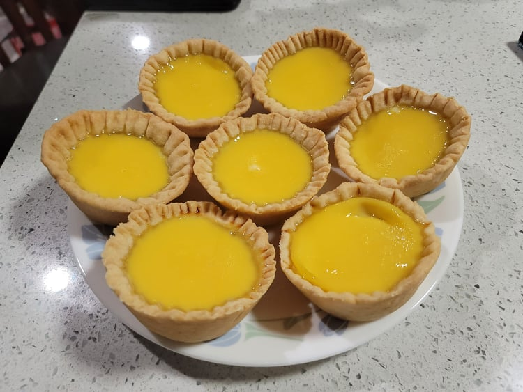

Egg Tarts

Ingredients:
Crust:
- 2 cups Flour
- 1/8 tsp Salt
- 12 tbsp Butter, slightly softened, cubed
- 2 tbsp Cold water
Filling:
- 1/2 cup Sugar
- 1 cup Boiling water
- 1/2 cup Evaporated milk
- 3 Eggs
- 1 tsp Vanilla extract
Instructions:
- Combine the flour and the salt into a large bowl. Then quickly mix in the butter using your hands. Mix until it looks like small crumbs.Then mix in the cold water. Wrap in plastic wrap and chill the the fridge for 20 minutes.
- Remove from the fridge and prepare a flat floured surface. Roll the dough out into a roughly 6x15 inch rectangle. Fold the top third over the middle, and then the bottom third over that. Turn the dough 90 degrees and then repeat the rolling and folding process once more. Rewrap in plastic wrap and let chill once more, for 1 hour.
- To prepare the filling, dissolve the sugar into the boiling water and then let it return to room temperature. Then whisk together the eggs, milk, and vanilla extract before then whisking it into the sugar water.
- Preheat the oven to 375 degrees Fahrenheit.
- Roll out the dough to 0.2 inch thick and then cut out 4 inch circles with a stencil or cookie cutter. Fit the circles into the molds of a greased muffin pan. You can use chopsticks or something similar to create a crumple design in the crust. Reroll the excess dough and repeat until you have 16 tarts.
- Evenly fill the tarts with the filling, about 3/4 full.
- Place into the oven and then immediately reduce the heat to 350 degrees Fahrenheit. Bake for 26-29 minutes, or until a toothpick placed into the center can stand up.
- Remove from the oven and let cool for at least 10 minutes.